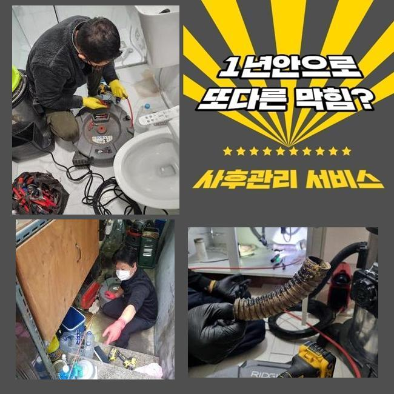
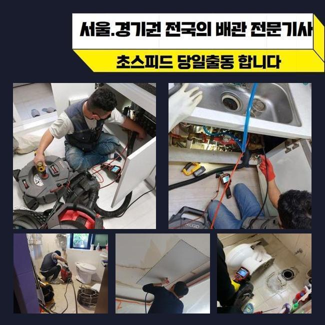
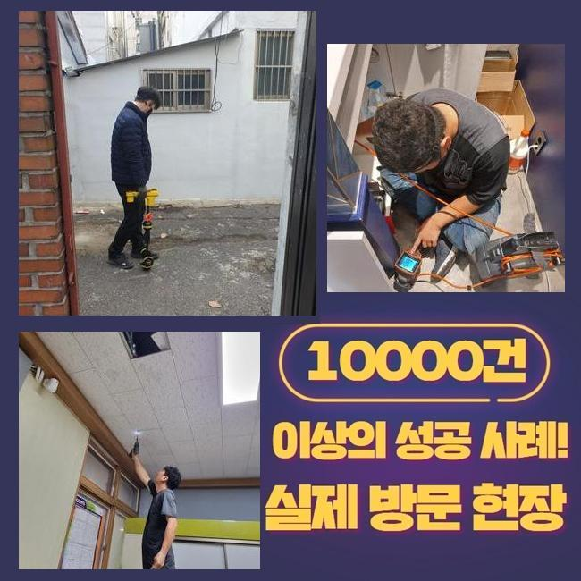
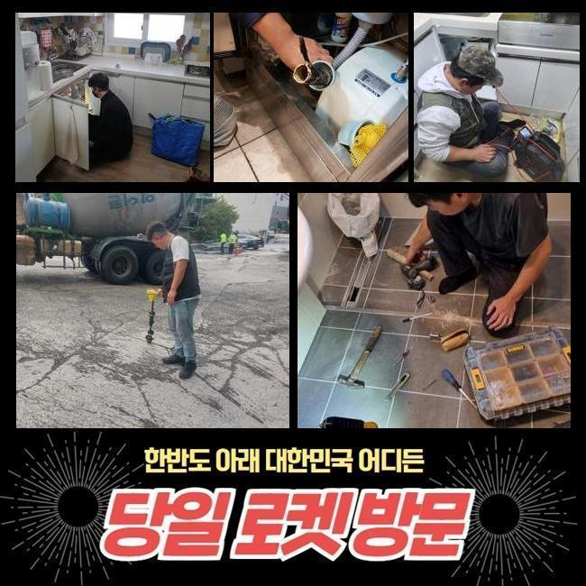
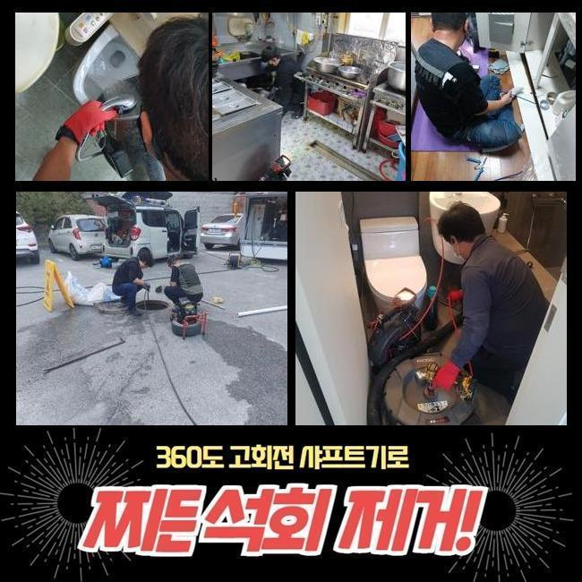

🏠 성남 야탑동대변기뚫음 삼평동 맨홀막힘 배관막힘누수업체
성남 야탑동 변기막힘 전문 시공 후기

📋 작업 개요
- 위치: 성남 야탑동, 야탑동, 성남
- 서비스 유형: 변기막힘, 하수구막힘, 배관막힘, 맨홀막힘, 누수수리, 뚫는업체, 배관청소, 고압세척, 배관보수, 악취차단
- 작업 일시: 2024. 12. 18. 10:50
- 업체명: 하수구수사대 (010-5615-2118)
🔍 문제 상황
성남 야탑동대변기뚫음 삼평동 맨홀막힘 배관막힘누수업체
여러 활동으로 물을 활용하면 알지 못하는 사이에 하수구에 불순한 물질들이 겹겹이 쌓여갈 수 있습니다
조금씩 부풀어 오르다보면 뻑뻑한 밀집도로 말라붙을 수 있어서 이탈시키는 것도 난관입니다
벽을 따라 흡착된 이물질을 처리해 내고자 타격을 마구잡이로 가하다가는 배관 크랙이나 누수까지 되는 상황 등 복잡해질 수 있어요
무엇이 잘못됐는지 식별되는 현장이라고 쳐도 상황에 맞는 장치를 조화롭게 선택해서 시공해야만 결함없이 말끔하게 배수구를 회복시킬 수 있습니다
셀프 조치를 한다면 전체적인 문제를 모조리 잡아내기 힘들고 이렇다할 변화가 없을 수 있어요
이번에 찾았던 작업장은 한 가정이 거주하고 계셨는데 역방향으로 하수가 되돌아오면서 습하고 냄새까지 유발되어 제약이 정말 많다고 부탁하신 현장이었는데요
빠르게 상황을 판단한 뒤에 도구를 빠짐없이 싣고서 초인종을 눌렀습니다
걸음을 재촉해서 현상을 둘러보았더니 바닥부의 하수구 아래에서 물이 퐁퐁 솟아나고 있었습니다
문제를 발견하자마자 셀프 세척용액을 들이부어서 여러 차례 시도했으나 크게 개선되지는 않고 변화가 없었다고 합니다

🔎 원인 분석
💡 전문가 진단: 정밀 진단 장비를 사용하여 슬러지의 고착 여부를 판명하고 타격/세척 작업을 실시했습니다.
물이 울컥거리면서 튀어나와서 악취문제까지 더해져서 벽지와 가구에 냄새가 베이는 등 고통 받는 중이라 하셨습니다
고질적인 하수구 불통을 철저히 극복하기 위해서는 어떤 것이 원인이 되어 하수관 관련한 문제점이 물 위로 드러났는지에 대해 원인 규명을 해줘야 합니다
그러므로 사전에 내부 관측을 돕는 카메라 장치를 써서 내측의 현황을 봐줬습니다
내시경의 기능을 통하여 상세히 들여다 봤더니 물이 빠져나가는 경로 도중에 유분이 꽉 차게 모인 것이 문제의 근원이라고 입증할 수 있었어요
이처럼 강력하게 결속된 기름 덩어리를 타격해서 배관에서 뜯어내려고 도전하면 배관 벽체에 스크래치가 일어날 수도 있습니다
이를 해소하기 위한 전문적 장치를 가동하는 편이 훨씬 안전합니다
카메라를 보는 사전조사로 인지한 배관 관련 내용을 투명하게 공개를 해드리고 청소에 최적화된 장비를 별도로 작동해 주었습니다
고압수를 통한 하수구 정화가 실행됐고 꽤나 깨끗하게 만들고서 진행을 잠깐 멈췄던 조금씩 이동하며 스크린을 주시하면서 진행도를 살폈습니다
꿈쩍 않던 하수가 움직이는 것을 발견했지만 여전히 청소가 필요한 구간들이 식별되어 진행을 잠깐 멈췄던 정화 활동을 지속했습니다
고형물이 분리가 되고 관통이 완료되었음을 최종으로 보고서 절차를 매듭 지을 수 있었습니다

🔧 작업 과정
최후로 내시경을 넣어서 작업이 끝난 곳을 체크하니 기름지던 물질들이 싹 전량 청소가 완료되어 파이프 안이 화사하게 밝아진 상태임을 알게 됐습니다
파이프라인의 사이에서 강하게 응고되어 있었던 유분 덩어리의 사이즈가 혀를 내두를 수준이었는데 다른 세부적인 기기들을 추가로 적용하지 않고서도 내부 정화가 완수되어서 시간을 많이 절약했습니다!
비교적 연한 기름이 아니고 석회때문에 흐름의 차단이 빚어진 장소였으면 단순한 하나의 작업으로는 끝내기 힘들어요
만일 석회로 변성된 찌꺼기가 굳건히 자리를 지켜고 있으면 장비를 마구 돌려서는 안 되고 견고한 석회가 쪼개지게끔 제제를 주입해야 합니다
이렇게 연화시키는 약물을 넣은 뒤에 관찰하면 보글보글 거품이 끓는데 여기서 수돗물을 붓고 헹궈내 준다면 중화가 되면서 몰랑하게 변화합니다
백화 제거제는 평범한 사람들이 구하기가 어려우니 막힘이 심하다는 걸 인지하셨으면 혼자가 아닌 전문적인 조치를 받아야 만족을 얻을 수 있을 겁니다
관로 청소를 해주는 액체로 셀프로 처리하려 시도하는 시도를 하시는데 석회가 유발하는 상태면 시중의 제품군으로는 손 쓰기 힘듭니다
하수관의 불통이 빚어지는 사유는 복합적인 이유가 있으니 큰 고민없이 뚫으려 하지 않고 먼저 내시경을 우선 배치하여 가로막힌 쪽들이 어딘지 판단해야 명확하게 배수관을 만들 수 있어요
육안으로 판별해서는 여러 갈래길로 나뉘는 배수관의 구조 자체를 분석하기 까다롭습니다
그러므로 내시경을 통해서 내측을 살펴보는 단계가 기반이 되어야 합니다
하수관의 흐름이 저하되는 것은 단시간에 형성되는 게 아니고 장기간 꾸준히 누적되면서 끈적한 기름기와 찌꺼기가 꾸준히 쌓이게 되어 결국 견고한 덩어리로 굳어져 버립니다
물 흐름이 끊기기 이전에 안전하게 이용하는 것이 올바를텐데 예시로 정기적으로 온수를 하수구 구멍에 부으면서 뭉쳐있는 노폐물 덩어리가 휩쓸려 갈 수 있도록 신경쓰는 게 좋습니다
굵은 입자의 쓰레기가 빠져버리지 않도록 배수구 필터 등을 씌우고 쓰시는 게 좋은 예방책입니다
거주 목적의 가정집을 비롯해 영업장이나 상가 등 어떤 용도로든 물을 쓴다면 이와 같은 하수구에 대한 사안과 마주할 수 있어요
폐수과정이 더뎌졌다는 사실을 알아챘다면 빨리 움직여서 중증 막힘이 되기 전에 조속한 수습으로 뚫어야 합니다
막힘이 심화되다보면 하수가 울컥 쏟아져 나오며 벌레나 악취와 같은 트러블을 감내해야 합니다


✅ 작업 완료
약화된 배관이 터져버리면 이웃집까지도 동일한 문제가 벌어질 수 있는데다가 이웃의 문제를 개선하기 위한 금액도 윗 집에서 책임져야 할 것입니다
막히는 일이 나타나지 않게 유지 보수를 주의해서 하셔야 부담이 적을 겁니다
신중하게 하수구 활용 절차를 지켜도 시간이 오래 된다면 막힘 사태가 필연적으로 생길 때가 있습니다
막연하게 힘줘서 뚫지 마시고 저희에게 고장난 하수구에 대한 수리를 요청주시면 됩니다!


⚠️ 베란다 누수 및 방수 관리 방법
- ✅ 비가 많이 올 때 창틀 주변이나 아래층 천장에 얼룩이 생기는지 정기적으로 확인해 보세요.
- ✅ 우수관 주변 실리콘 마감이 들뜨거나 깨진 틈새가 있는지 손상 여부를 수시로 체크하세요.
- ✅ 베란다 바닥 타일의 줄눈(메지)이 소실되면 그 틈으로 물이 침투하여 누수가 유발됩니다.
- ✅ 누수 의심 증상 발견 시 방치하면 아래층 손실이 커지므로 즉시 전문가의 진단을 받으십시오.
💡 핵심 정리
- 확실한 장비 작업(내시경 점검 및 샤프트 스케일링)으로 원인을 뿌리 뽑습니다.
- 작업 후 1년 이내에 동일한 부위 재발 시 100% 무상 A/S 서비스를 보장합니다.
- 서울 · 경기 · 인천 전 지역에 24시간 언제든 긴급 출동할 수 있도록 항시 대기 중입니다.
❓ 자주 묻는 질문 (FAQ)
🚨 성남 야탑동 변기막힘 문제로 고민이신가요?
정확한 원인 진단과 확실한 시공으로 재발 없는 해결을 약속드립니다.
24시간 긴급 출동 | 서울 · 경기 · 인천 전지역 | 1년 내 재발 시 무상 A/S